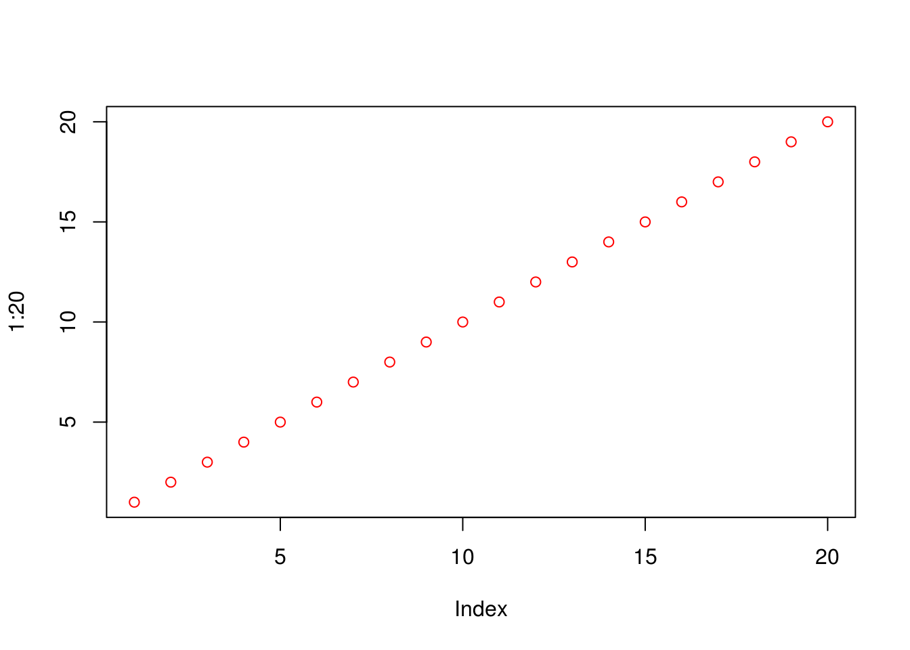

2 Lori’s Test Workshop
Authors:
Lori Shepherd2.
Last modified: 22 May, 2018.
2.1 Overview
2.1.1 Description
Along with the topic of your workshop, include how students can expect to spend their time. For the description may also include information about what type of workshop it is (e.g. instructor-led live demo, lab, lecture + lab, etc.). Instructors are strongly recommended to provide completely worked examples for lab sessions, and a set of stand-alone notes that can be read and understood outside of the workshop.
2.1.2 Pre-requisites
List any workshop prerequisites, for example:
- Basic knowledge of R syntax
- Familiarity with the GenomicRanges class
- Familiarity with xyz vignette (provide link)
List relevant background reading for the workshop, including any theoretical background you expect students to have.
- List any textbooks, papers, or other reading that students should be familiar with. Include direct links where possible.
2.1.3 Participation
Describe how students will be expected to participate in the workshop.
2.1.4 R / Bioconductor packages used
List any R / Bioconductor packages that will be explicitly covered.
2.1.5 Time outline
An example for a 45-minute workshop:
| Activity | Time |
|---|---|
| Packages | 15m |
| Package Development | 15m |
| Contributing to Bioconductor | 5m |
| Best Practices | 10m |
2.1.6 Workshop goals and objectives
List “big picture” student-centered workshop goals and learning objectives. Learning goals and objectives are related, but not the same thing. These goals and objectives will help some people to decide whether to attend the conference for training purposes, so please make these as precise and accurate as possible.
Learning goals are high-level descriptions of what participants will learn and be able to do after the workshop is over. Learning objectives, on the other hand, describe in very specific and measurable terms specific skills or knowledge attained. The Bloom’s Taxonomy may be a useful framework for defining and describing your goals and objectives, although there are others.
2.1.7 Learning goals
Some examples:
- describe how to…
- identify methods for…
- understand the difference between…
2.1.8 Learning objectives
- analyze xyz data to produce…
- create xyz plots
- evaluate xyz data for artifacts
2.2 Workshop
Divide the workshop into sections (## A Section). Include
fully-evaluated R code chunks. Develop exercises and solutions, and
anticipate that your audience will walk through the code with you, or
work on the code idependently – do not be too ambitious in the
material that you present.
vec <- 1:20
plot(1:20, col="red")
Roswell Park Comprehensive Cancer Center, Buffalo, NY↩